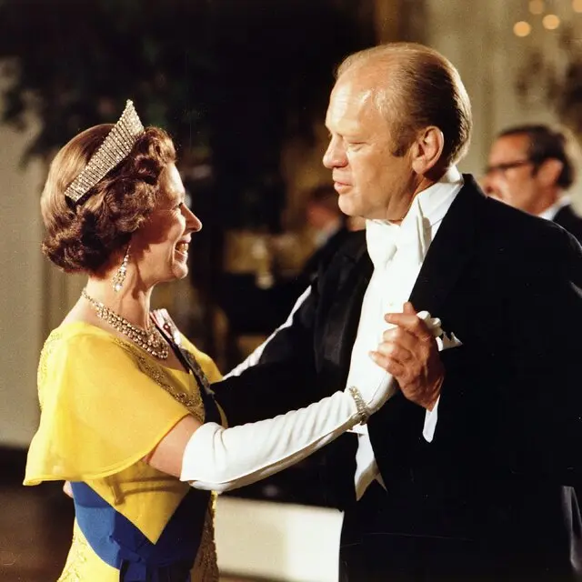
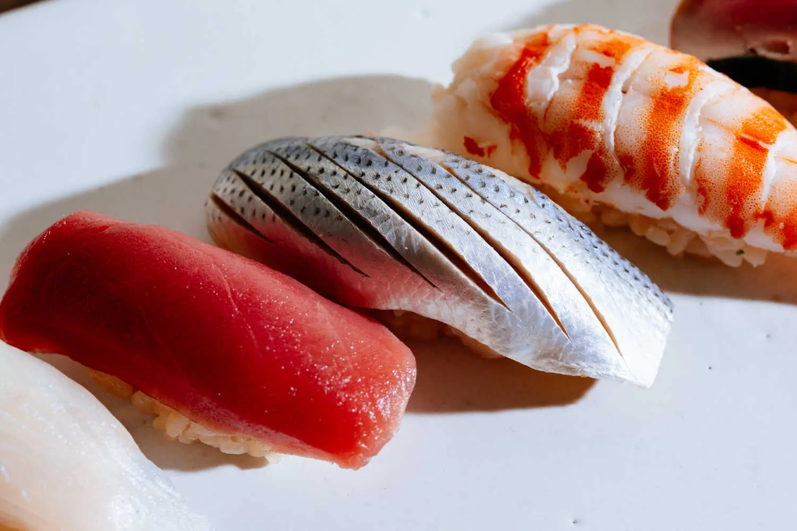

Officials Are Investigating Writing Tied to Correspondents' Dinner Attack
A man being held in connection with the attack at a Washington hotel wrote a note indicating potential targets and grievances, authorities said
'Shots Fired!': Inside the Pandemonium at the Washington Hilton
Guests took cover as Secret Service agents climbed over tables to protect some of the country's most high-ranking officials, including President Trump
Rumors and Speculation Swirl Online After Shooting
Security at Dinner Worked as Intended, Experts Say

Most Guests Ducked for Cover. This Man Munched on His Burrata Salad.

What We Know About the Gunman
War in the Middle East
U.S.-Iran Talks
Israel-Lebanon Truce
Strait of Hormuz
Generals Running Iran
Timeline of War
ANALYSIS
Iran and U.S. sink Into Awkward Limbo of 'No War, No Peace'
Each side is betting it can last longer than the other, analysis say. But there are risks in a stalemate without a deal.
What to Know About U.S.-Iran Peace Talks
Oil Rises and Stocks Waver as Peace Talks Stall

Can King Charles Help Heal the U.S.-British Rupture?
Not since Queen Elizabeth II traveled to Washington after the Suez Crisis has a visit by the British monarch come at such a fraught time in Anglo-American relations.
8 Memorable Moments From Past British Royal Visits to the U.S.

Alamy; Associated Press; Ed Reinke/Assoceated Press; Universal Image Group, via Getty Images
Former Israeli Premiers Join in Bid to Oust Netanyahu in Elections
Naftali Bennett, a right-wing politician, and Yair Lapid, a centrist, will merge parties for a vote later this year.
Got a Tip?The Times offers several ways to send important information confidentially
The Mother Who Will Not Speak
When Jacqueline Pritchett's son, Jacob, vanished last year, she refused to acknowledge that he existed. Her life is as mysterious as his dissappearance.
In Case You Missed It
Every Black Republican Is Leaving the House, Erasing Diversity Gains
Why Has 'Christ Is King' Become a Controversial Statement?
How a Pop Star's Portrait Launched the Career of an Unknown Spanish Artist
Trump Administration
Gas Prices
Powell Investigation Dropped
Navy Secretary Fired
Approval Rating
Key G.O.P Senator Says He Is Prepared to Advance Nominee for Fed Chair
Senator Thom Tillis said he had received assurances from federal prosecutors that eased his concerns , setting the stage for a key committee vote on Kevin Warsh
U.S. Military Strikes Another Boat in the Easten Pacific, Killing 3
Family of Suspect in Colorado Attack Released After Months in ICE Detention
The Hard Life of an Immigrant Whose Killing Became a Symboll for Trump
President Trump posted footage of Nilufa Easmin's brutal killing by another immigrant to advance his agenda. Behind the rhetoric was a more nuanced story.
An Unthinkable Extreme of Domestic Voilence: Killing Multiple Relatives
A Louisiana slaying of eight children last week was an example of a horrific subset of domestic violence that experts call family annihilation
Violence Has Fallen, but So Has Funding for Prevention
The Rising Chinese Automaker Not Named BYD
Geely is challenging the giant by adapting quickly to swings in demand and energy prices, seizing on interest in electric vehicules prompted by the war in Iran
The Chief of Chicago's Science Museum Is Doing Some Experiments
Chevy Humphrey explained why the scientific nethod matters in business.
The 25 Best Restaurants in Los Angeles Right Now
An a la carte sushi menu with fantastic cocktails, an oasis of tlayudas and more join our Los Angeles restaurant List.
Our Miami Restaurant list Includes Japanese Street Food and a Thai Bistro
Emmeril's Is Among the New Entries on Our New Orleans List

Can Arsenal Survive Four More Ordeals
With a handful of games remaining the team remains favored to beat Manchester City for the Premier League title
Explaining the Refereeing Scandal That Has Rocked Italian Soccer
world Cup Stars Are Getting Injured. Tension Is Growing.

How Well Will You Age? Take Our Quiz
The little daily decisions we make add up - and ultimately shape our longetivity


'It Wasn't Real, but It Was Real'

Jonathan Michael Castillo for The New York Times
Is The Supreme Court Coming
Apart at the Seams?

Meet the New Leader of The FreeWorld

My Wife is 85.
She Takes my Breath Away

The Millennial Midlife
Crisis Manifests as
Visible Abs
The Conspiracy
Theory Behind Tucker
Carlson's Apology
Stewart Brand on
Life's Most Important
Principle
This Is How Kennedy
Loses the MAHA
Moms
The world
How a Trump Event Shooting
Unfolded
The gunman had written a
"manifesto", the president said,
before trying to enter a dinner in
Washington for the White House
press corps

Most shared
Big-Game Hunter from Califonia
Is Killed by Elephant in Central
Africa

'I'm Not a Basket Case': Trump
Describes His Mind-Set After an
Evening of Chaos

'Wagyu'Used to Guarantee
Quality Beef. What Are You
Paying for Today

In the Foothills of Mount Fuji, the
Fight Is On Against Unruly
Tourists

There's a New Phishing Scam:
Fake Invitations